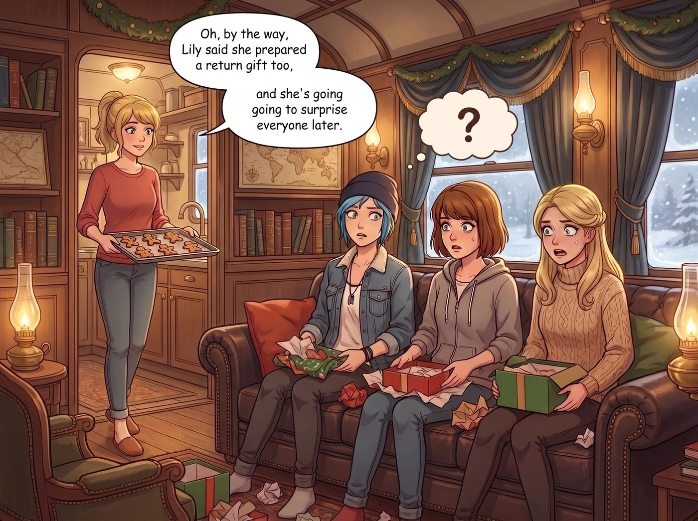

回禮恐慌症候群

聖誕節下午，當 Chloe、Max 和 Victoria 還沉浸在拆禮物的溫馨餘韻中時，Kate 端著剛烤好的薑餅走出廚房，隨口說了一句：「對了，Lily 說她也準備了回禮，晚點要給大家一個驚喜哦。」
三個人臉上的笑容，在同一秒鐘凝固了。
一、集體條件反射式的恐慌
「回禮？」Chloe 手裡的可樂罐差點捏扁，「什麼意思？Lily 要送我們……回禮？」
「妳確定她說的是『禮物』，不是『訴狀』？」Victoria 猛地從沙發上坐直身體，臉色瞬間發白，「她該不會是想把我們送她的東西，包裝成什麼『不對等贈與』的證據，然後拿去申報什麼稅務漏洞吧？」
三個人的腦內警報系統，幾乎在同一時間瘋狂運轉起來。
「等等……」Max 抓著頭髮，努力回想這幾週的所有互動，「Lily 上個月是不是幫我們處理過一批供應商糾紛？該不會她準備的『驚喜』，是把那家供應商的破產文件當禮物拆給我們看吧？」
「不對，我覺得更有可能是……」Chloe 的臉色也變得凝重起來，「上週她不是提到，那家在西雅圖欺負過我們的物業管理公司，還沒收到『應有的教訓』嗎？她該不會選在聖誕節這種特別的日子，給那家公司來個『毀滅性驚喜』，然後也順便把我們拖下水，變成什麼共犯結構？」
二、苦惱的逃亡計畫
「不行，我們得想個辦法阻止她。」Victoria 站起身，在客廳裡焦躁地踱步，「或者……我們乾脆先發制人，找個藉口，今天晚上就開車離開這裡？」
「離開？去哪裡？」Max 也跟著緊張了起來。
「隨便，去西雅圖市區找間飯店躲一晚也行！」Victoria 已經開始在腦內盤算逃亡路線，「等她的『回禮行動』告一段落，我們再回來裝作什麼都不知道！」
Chloe 皺著眉，努力思考該怎麼婉拒：「可是這樣太傷她心了吧？她畢竟是一片好意……欸不對，我們到底在害怕什麼？她又不是要對付我們，她應該是要幫我們報仇才對吧？」
「報仇也很可怕好嗎！」Victoria 崩潰地抓著頭髮，「她的報仇方式，就是讓我們一起簽署一堆連我自己的律師都看不懂的授權書！我可不想大過節的，還要應付聯邦調查局上門喝咖啡！」
三個人越討論越焦慮，甚至開始認真地在腦內模擬各種婉拒的說辭，試圖找到一個既不傷害 Lily 的心意、又能全身而退的完美藉口。
三、提前揭曉的謎底
「你們在討論什麼呀，這麼緊張？」
廚房門口，Kate 端著剛煮好的熱可可走了出來，看著三個人如臨大敵的表情，忍不住笑出聲。
「Kate！」Chloe 一把抓住她的手臂，語氣急切，「妳老實告訴我們，Lily 的『回禮』，到底是要對付誰？是那家欺負過我們的物業公司嗎？還是……她又盯上什麼新的目標了？」
Kate 愣了一下，隨即露出了一個帶著幾分憋笑的溫柔表情：「你們想太多了啦。Lily 昨天特地跑來問我，能不能教她做一些簡單的手工甜點。她說，你們三個都親手準備了禮物給她，她也想學著親手做點什麼回送給大家，而不是像平常那樣，隨便用什麼合規報告去解決問題。」
客廳裡陷入了長達三秒的死寂。
「就……就這樣？」Victoria 難以置信地眨了眨眼，「沒有什麼『毀滅性驚喜』？沒有『共犯結構』？」
「當然沒有呀。」Kate 溫柔地笑著，眼神裡帶著一絲看好戲的狡黠，「不過，看到你們剛才那副準備連夜逃亡的表情，我覺得也蠻好玩的，所以就沒有提前打斷你們。」
四、笨拙的薑餅人
就在這時，廚房裡傳來一陣有些手忙腳亂的聲響，接著 Lily 端著一個托盤，小心翼翼地走了出來。
托盤上擺著幾個造型稱不上標準、甚至有點歪七扭八的薑餅人——有的手臂長短不一，有的臉上的糖霜表情畫得像是遭遇了車禍，還有一個不知道為什麼，被做成了略微扁塌的形狀，怎麼看都不太像人形。
「學姐們，聖誕快樂。」Lily 有些不好意思地推了推圓框眼鏡，語氣裡少見地帶著一絲侷促，「這是我第一次嘗試不看配方比例、純粹憑感覺製作的甜點。雖然……雖然造型上可能存在一些『結構穩定性缺陷』，但我保證，所有原料都符合最高標準的食品安全合規。」
Chloe 看著那個扁塌的薑餅人，噗嗤一聲笑了出來，緊繃了半天的神經瞬間放鬆：「哈哈哈哈，我還以為妳要給誰寄傳票，結果是在跟餅乾乾架？」
「這個手臂歪掉的，是不是想表達某種『反抗權威的肢體語言』？」Victoria 也忍不住揶揄道，語氣裡卻帶著明顯的鬆了一口氣。
Lily 聞言，眼睛忽然亮了一下，像是抓到了什麼靈感，認真地推了推眼鏡：「這個角度很有意思，Victoria 學姐。如果我們把這隻薑餅人定義為『受到不當塑形壓迫的受害實體』，理論上我可以代表牠向……」
「不是！我們只是開玩笑而已！」Chloe 和 Victoria 幾乎是同時脫口而出，臉上瞬間又寫滿了驚慌，「妳千萬別當真啊！」
Max 拿起那個造型最誇張的薑餅人，仔細端詳了一下，笑著搖搖頭：「不管怎樣，這絕對是我今年收過最有記憶點的禮物。」
Lily 有些委屈地看著大家笑成一團，正想開口辯解，卻被 Kate 溫柔地摟住了肩膀。
「別在意，Lily，這些薑餅人很可愛呢。」Kate 笑著安慰道，「而且妳看，大家笑得多開心呀，這就是最好的證明。」
看著眼前這群曾經以為自己要連夜逃離現場、此刻卻笑得東倒西歪的傢伙，Lily 也終於忍不住跟著笑了起來。她拿起一個薑餅人，遞給了離自己最近的 Chloe。
「聖誕快樂，Price 學姐。這隻的糖霜表情，其實是我特別為妳畫的，靈感來自妳每次看到帳單時的臉。」
「……妳這是變相報復吧！」
車廂裡的笑聲，混合著薑餅香氣，一直持續到了深夜。